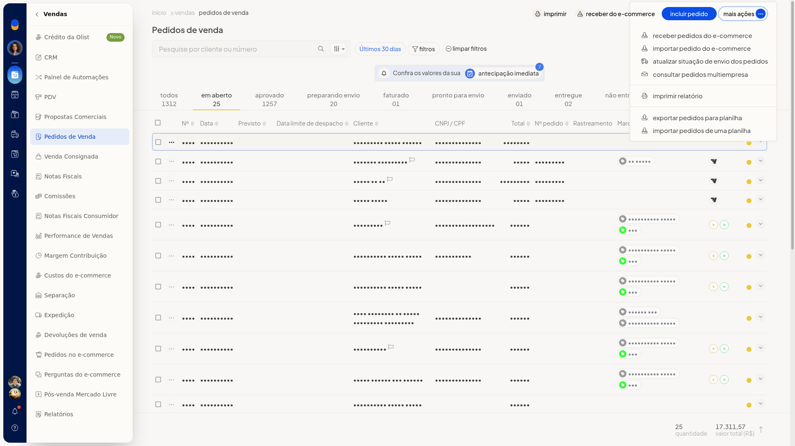
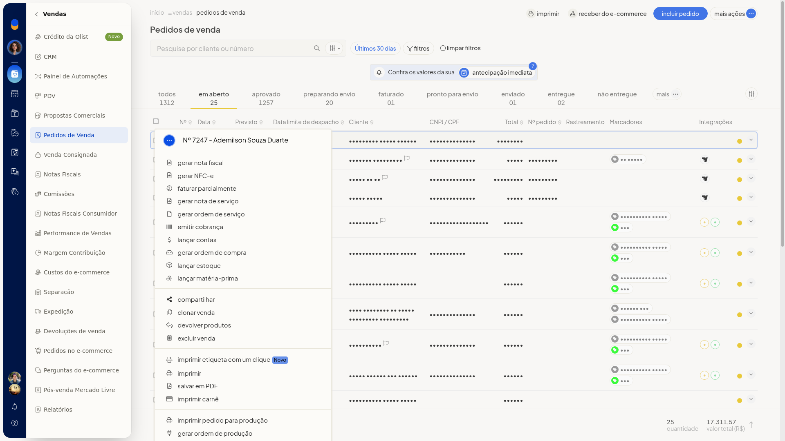
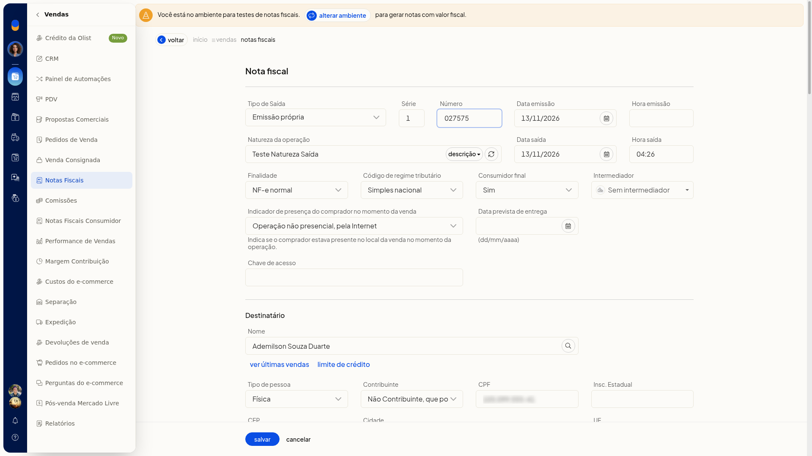
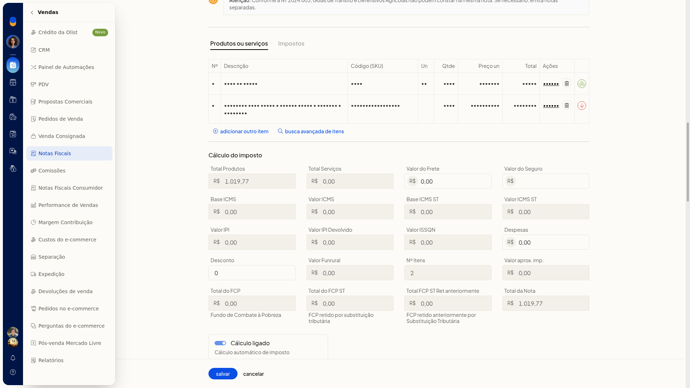
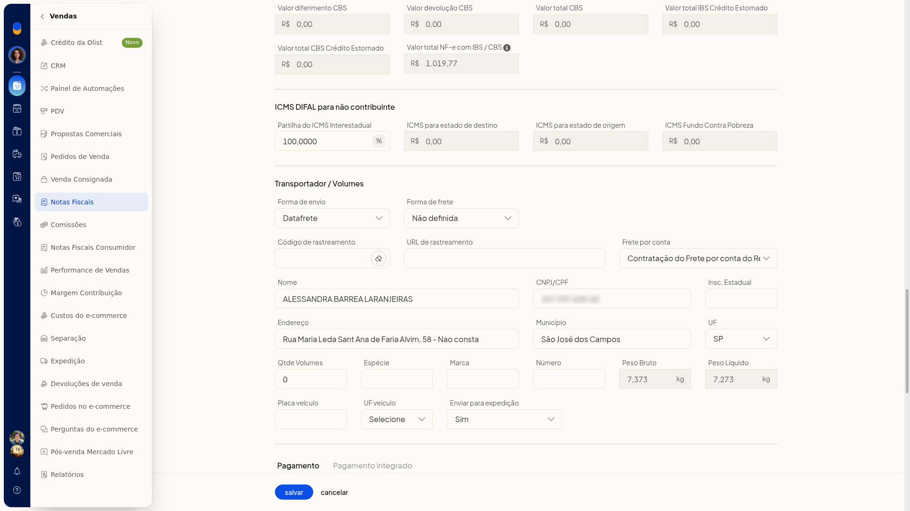
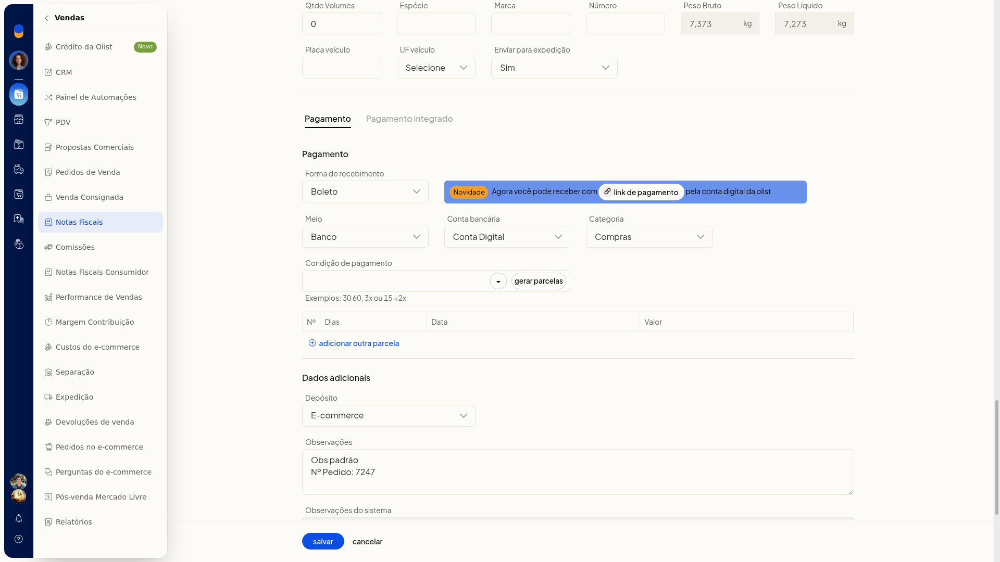

Gerar nota fiscal a partir do pedido
No ERP da Olist, você gera a nota fiscal a partir de um pedido de venda já registrado. O formulário abre com os dados desse pedido para você revisar o cabeçalho, o destinatário, os itens, o transporte e o pagamento. Nessa abertura, a nota ainda não fica gravada.
Pré-requisitos
- É preciso já existir um pedido de venda.
- Se a opção não aparecer para você, peça acesso ao administrador da conta.
Importante
- A geração da nota fica no menu ••• da linha do pedido. Em Mais ações de Pedidos de Venda não há Gerar nota fiscal; esse menu lista receber, importar e exportar pedidos.

Instruções
-
Acesse Vendas > Pedidos de Venda.
-
Na linha do pedido, abra o menu •••. A primeira ação é Gerar nota fiscal.

-
Clique em Gerar nota fiscal.

-
Revise o cabeçalho, o destinatário, os itens, o transporte e o pagamento. A nota fiscal abre preenchida a partir do pedido, pronta para revisão, sem gravação. Forma de envio pode vir como Datafrete, Forma de frete como Não definida e o frete por conta do remetente.



Resultado
O formulário gerado pelo pedido permanece aberto e editável, sem gravação.
Informações adicionais
O mesmo menu mostra outras ações
No menu ••• do pedido também aparecem Gerar NFC-e, Faturar parcialmente e Gerar nota de serviço.